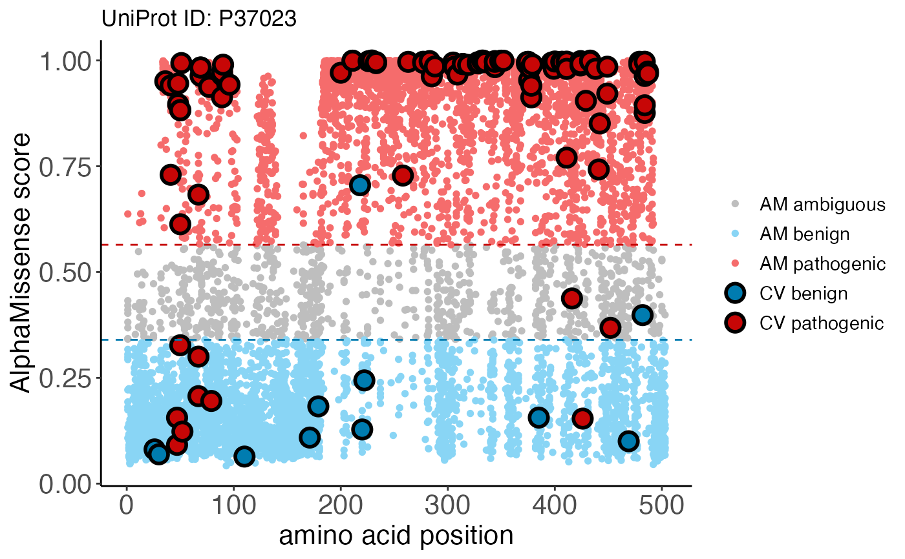

Integrate ClinVar Labels with AlphaMissense Pathogenicity Scores
Source:R/clinvar_plot.R
clinvar_plot.Rdclinvar_plot() integrates ClinVar classifications
with AlphaMissense predicted scores derived from
am_data("aa_substitutions") and returns a ggplot object for
visualization.
clinvar_data() loads in the raw ClinVar information from
the supplemental table of the AlphaMissense
[2023] paper.
Usage
clinvar_plot(uniprotId, alphamissense_table, clinvar_table)
clinvar_data(record = ALPHAMISSENSE_RECORD, bfc = BiocFileCache())Arguments
- uniprotId
character()a valid UniProt accession identifier.- alphamissense_table
a table containing AlphaMissense predictions for protein variants. By default, the table is derived from
am_data("aa_substitution"). Alternatively, a user-definedtibble::tbl_dfordata.framecan be supplied.- clinvar_table
a table containing ClinVar information. By default, the table is derived from the supplemental data of the AlphaMissense paper. Alternatively, a user-defined
tibble::tbl_dfordata.framecan be supplied.- record
character(1) Zenodo record for the AlphaMissense data resources.
- bfc
an object returned by
BiocFileCache()representing the location of the AlphaMissenseR database. The default is the 'global' BiocFileCache.
Value
clinvar_plot() returns a ggplot object which overlays
ClinVar classifications onto AlphaMissense predicted
scores. Blue, gray, and red colors represent pathogenicity
classifications for "likely benign", "ambiguous", or
"likely pathogenic", respectively. Large, bolded points are
ClinVar variants colored according to their clinical
classification, while smaller points in the background are
AlphaMissense predictions.
clinvar_data() returns a tbl with 82872 rows and 5 variables:
variant_id: ClinVar variant identifier.transcript_id: Ensembl transcript identifier.protein_variant: UniProt accession:protein variant identifier.AlphaMissense: AlphaMissense pathogenicity score.label: Binary ClinVar class, either "benign" or "pathogenic".
Details
For alphamissense_table, columns must include:
uniprot_id: UniProt accession identifier.protein_variant: variant identifier string, with protein position in the middle, and the reference and mutant amino acid residues to the left and right of the position, respectively.am_class: AlphaMissense classification of either "benign", "ambiguous", or "pathogenic".am_pathogenicity: AlphaMissense predicted score.
For clinvar_table, columns must include:
uniprot_id: UniProt accession identifier, matchingalphamissense_table.protein_variant: variant identifier string, matchingalphamissense_tableformat.cv_class: binary ClinVar classification of "benign" or "pathogenic".
References
Cheng et al., Accurate proteome-wide missense variant effect prediction with AlphaMissense. Science 381, eadg7492. DOI:10.1126/science.adg7492.
Examples
alphamissense_table <- am_data("aa_substitutions")
clinvar_plot(uniprotId = "P37023",
alphamissense_table = alphamissense_table)
#> * [15:32:19][info] 'clinvar_table' not provided, using default ClinVar dataset in AlphaMissenseR package
